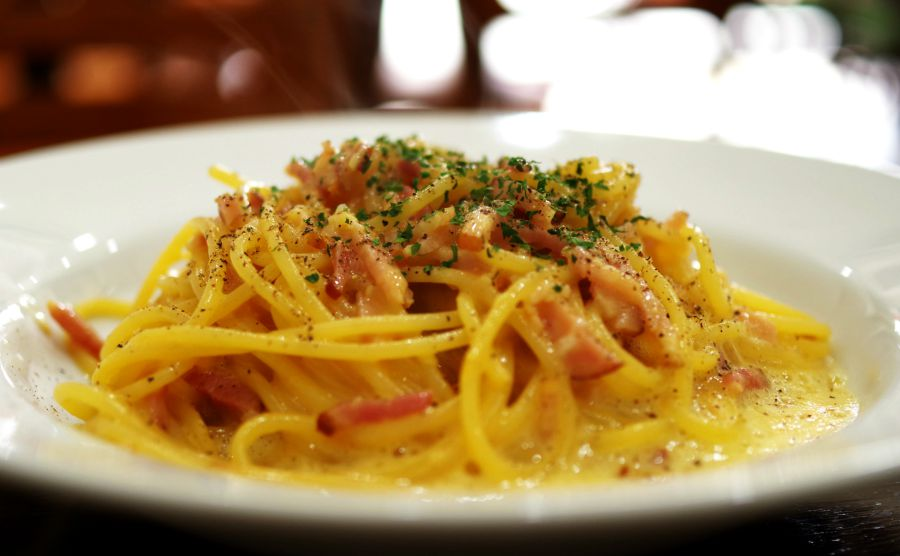

Carbonara Spaghetti

Description:
Carborana spaghetti is a traditional italian pasta recipe, that gets its name (carbonara derivates from the italian word for coal) for the black dots formed by black pepper.
Ingredients:
- 200g (7 oz) spaghetti pasta;
- 1/2 cup diced bacon;
- 1/4 cup white wine;
- 2 whole eggs;
- 2 egg yolks;
- 1/2 cup grilled parmesan cheese;
- salt and black pepper to taste.
Steps:
- In a medium sized pan, boil 2 liters (1/2 gal) of water;
- Add 1 tablespoon of salt and the pasta to the boiling water and let it cook until the pasta is al dente;
- In a bowl, add the 2 whole eggs, the 2 egg yolks and the cheese and stir it with a fork.
- Place a frying pan over medium heat and brown the bacon for about 5 minutes, stirring occasionally.
- Reduce the heat, pour over the white wine, mix well and turn off the heat.
- Once the pasta is cooked, set aside 1 cup of the cooking water.
- Nexts steps are to be done quickly: drain the water, transfer the pasta to the pan with the hot bacon, add the eggs and mix well – the heat of the pasta will cook the eggs, forming a cream;
- Return the pan to the heat very low and gradually add the reserved cooking water, stirring it with a spatula for a few minutes until it forms a thick sauce.
- Serve afterwards with black pepper to taste.
Back